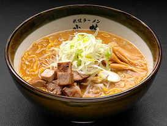

<!DOCTYPE HTML>
<html>
   <head>
      <title>menu</title>
      <meta charset="UTF-8">
      <link rel="stylesheet" href="menu.css" >
   </head>
<body>
  <div id="wrapper">
    <div id="header">
          <a href="index.html"></a>
    </div> 
    <div id="main-navi">
          <ul>
               <li><a href="index.html">ホーム</a></li>
               <li><a href="kodawari.html">こだわり</a></li>
               <li><a href="mise.html">お店紹介</a></li>
               <li><a href="menu.html">メニュー</a></li>
               <li><a href="syoukuninn.html">職人紹介</a></li>
               <li><a href="sinnnenn.html">信念</a></li>
         </ul>  
    </div>  
    <div id="main-feature">
            
   
    </div>
    <div id="main-features">
         <h1>メニュー</h1>
            
            <div class="bottom-box1"> 
                
                <h1>熟成味噌</h1>
                <p>武蔵を代表する王道の一杯。熟成味噌にたっぷりのゴマ、生姜を加えた風味ある味わいです。</p>
            </div>
            <div class="bottom-box2">
                 
                 <h1>熟成白味噌</h1>
                 <p>濃厚なコクと深みが感じられる一杯。深い味わいながらあっさりしているのが特徴です。</p> 
            </div>
            <div class="bottom-box3"> 
                 
                 <h1>熟成辛味噌</h1> 
                 <p>熟成味噌と豆板醤をベースとした、辛さの中に旨みを感じる一杯。お子様から女性まで当店一番人気！</p> 
            </div>
            <div class="bottom-box1"> 
                
                <h1>特製こい口醤油</h1>
                <p>厳選食材をこい口醤油で丸2日じっくり煮込んだ、コク･旨み･甘みが際立つ一杯。</p>
            </div>
            <div class="bottom-box2">
                
                <h1>醤油</h1>
                <p>特製醤油を火入れした、丸みのある一杯。ほんのり甘みのあるスープが熟成麺とよく絡みます。</p> 
            </div>
            <div class="bottom-box3"> 
                
                <h1>昔風醤油</h1>
                <p>特製醤油ベースであっさり仕上げた一杯。ニンニクの香りがほんのり効いた、昔ながらの味わいです。</p>  
            </div>
            <div class="bottom-box1"> 
                
                <h1>塩</h1>
                <p>深みのあるスープと熟成麺のバランスが絶妙。ほのかに香るゴマ油の風味が食欲をそそります。</p>
            </div>
            <div class="bottom-box2">
                
                <h1>20食限定　黒（くろ）</h1>
                <p>物産展やイベントで大人気の焦がしニンニク油が入った味噌ラーメン。</p> 
            </div>
            <div class="bottom-box3"> 
                
                <h1>20食限定　赤（あか）</h1>
                <p>当店、一番人気の辛味噌をベースに辛さとコクを増した新しい辛味噌。</p>  
            </div>
            <div class="bottom-box1"> 
                    
                    <h1>こだわりチャーシュー</h1>
                    <p>豚モモ肉の柔らかい部分のみをじっくり秘伝のたれで煮込んだ、贅沢な一品です。</p>
            </div>
            <div class="bottom-box2">
                 
                 <h1>半熟味玉</h1>
                 <p>特製こい口醤油に漬け込んだ自信の味玉！</p> 
            </div>
            <div class="bottom-box3"> 
                 
                 <h1>炙り焼豚丼（山わさび添え）</h1>
                 <p>焼豚に山わさびが絶妙なバランス。天かすの食感もお楽しみください。</p>  
            </div>
            <div class="bottom-box1"> 
                 
                 <h1>ギョーザ </h1>
                 <p>モチモチの特製皮に餡をたっぷり入れ、パリパリ、ジューシーに焼き上げました。ラーメンのお供にどうぞ。</p>
            </div>
            <div class="bottom-box4">
                 <h2>小ラーメン</h2>
                 <h2>大盛各種</h2>
                 <h2>ライス</h2>
                 <h2>ライス（大）</h2>
                 <h2>ビール</h2>
                 <h2>平日限定ランチタイム</h2>	 
            </div>
            <div class="bottom-box5">
                 <h2>100円引</h2>
                 <h2>120円増</h2>
                 <h2>120円</h2>
                 <h2>220円</h2>
                 <h2>550円</h2>
                 <h2>(11:00～14:00)</h2>	 
            </div>             
   </div>               
        <div id="second-feature">
            <div class="box1">
                <ul>
                    <li><a href="index.html">►&nbsp;&nbsp;ホーム</a></li>
                    <li><a href="kodawari.html">►&nbsp;&nbsp;こだわり</a></li>
                    <li><a href="mise.html">►&nbsp;&nbsp;お店紹介</a></li>
                </ul>
            </div>
        <div class="box1">
                <ul>
                    <li><a href="menu.html">►&nbsp;&nbsp;メニュー</a></li>      
                    <li><a href="syoukuninn.html">►&nbsp;&nbsp;職人紹介</a></li>
                    <li><a href="sinnnenn.html">►&nbsp;&nbsp;信念</a></li>
                </ul>
        </div> 
        <div class="box2">
                 <p>札幌市白石区北郷5条9丁目1-28（札幌ラーメン 武蔵 本店）<br>
                    T&nbsp;E&nbsp;L&nbsp;&nbsp;&nbsp;&nbsp;&nbsp;&nbsp;&nbsp;&nbsp;&nbsp;&nbsp;011-871-6341<br>
                    営業時間&nbsp;&nbsp;&nbsp;&nbsp;&nbsp;昼の部 11:00～16:00/
                    夜の部 17:00～22:00<br>
                    店休日&nbsp;&nbsp;&nbsp;&nbsp;&nbsp;&nbsp;&nbsp;&nbsp;水曜日</p>
      </div> 
</div>
        <div id="footer">
                <p>Copyright ©2019 musashi All Rights Reserved.</p>
        </div>      
</div>  
</body>
</html>      
  